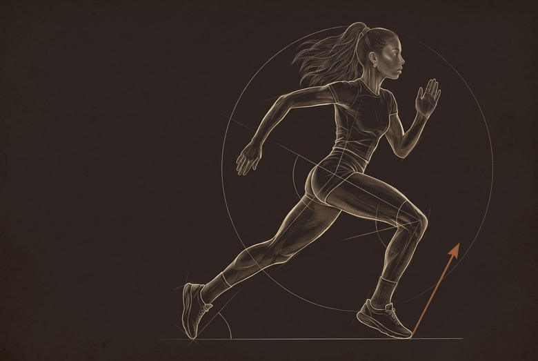

Das Provarun-Journal
Hinter jedem Lauf
liegt eine Geschichte.
Über den Körper, der dich trägt. Die Kraft, die dich bewegt. Und die Frage, warum wir überhaupt sprinten.

Warum der Mensch sprintet.
Was uns schnell macht. Wie unser Körper beim Sprinten arbeitet. Und warum es sich lohnt, die eigene Geschwindigkeit wiederzuentdecken.
Die Geschichte lesen
Provarun ist da.
Die Geschichte der ersten Version. Filmen, den Zielmoment finden und die Zeit speichern.
Zum Beitrag
Sprintzeit mit dem Handy messen: Wie genau ist das?
Ein Video macht deine Zeit nachprüfbar. Wie genau sie ist, entscheidet sich an Bildrate, Start und Zielmoment.
Zum Beitrag
Wie schnell ist schnell? 100‑m- und 400‑m‑Zeiten einordnen
Eine Zeit braucht einen Bezugspunkt. Offizielle Rekorde und Bestenlisten helfen dabei, wenn du ihre Grenzen kennst.
Zum Beitrag
Sprinten als Erwachsener: der Wiedereinstieg in vier Wochen
Wieder schnell laufen beginnt mit kontrollierten Schritten. Eine Orientierung für den Weg zurück zu Antritt, Rhythmus und einer eigenen Zeit.
Zum Beitrag